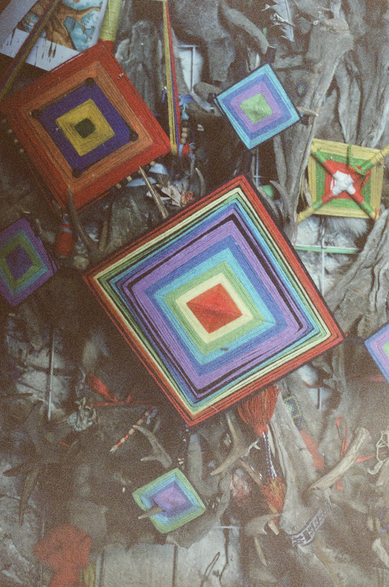

Portal Poem
For artists, writers, and makers.
A space devoted to artistic authorship, the imagination, and the development of creative work.
We explore what is moving through your work, the language you're developing, and what the process of making reveals about your particular way of seeing.
The work itself remains central: its questions, its demands, its possibilities, and the form it is asking to take.
Two ways to participate: a 12-week private mentorship and an ongoing membership with monthly writing circles.